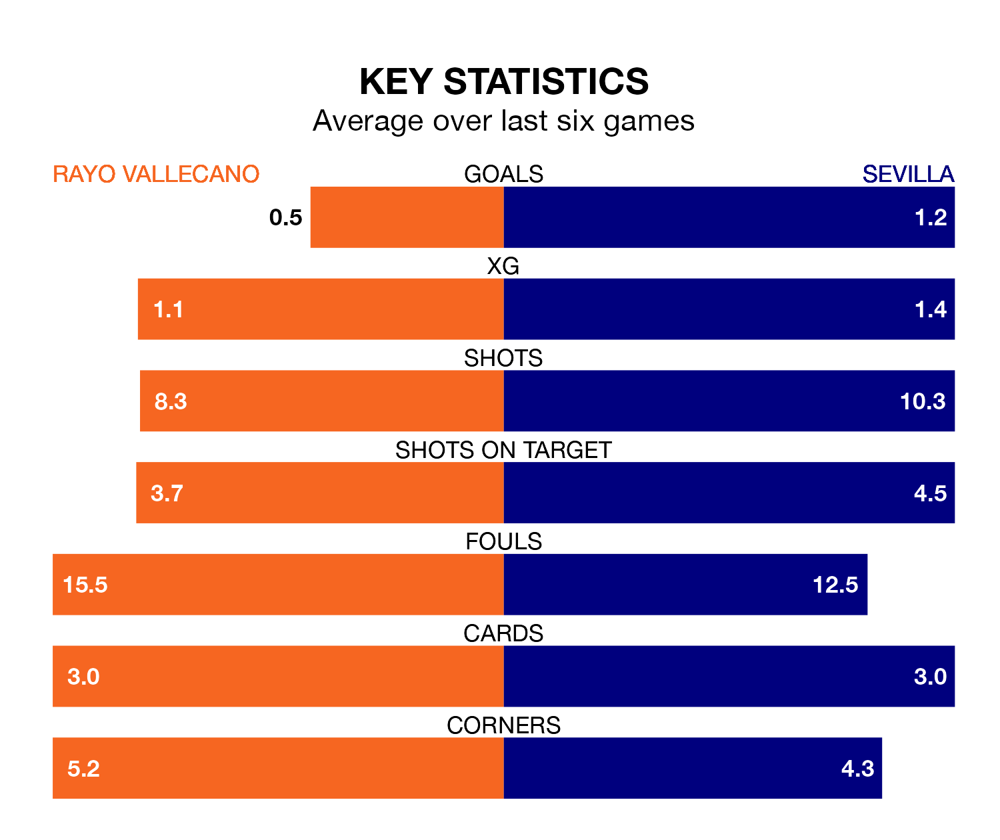

Sevilla travel to Estadio de Vallecas looking to secure a first win in six La Liga games against Rayo Vallecano on late Monday.
Sevilla have lost four and drawn one matches since they last earned three points – against Granada CF on December 19.
They face a Rayo side who have won just one and drawn one over that time.
In the last 10 years, Rayo and Sevilla have played each other on 12 occasions. Rayo won one of them, Sevilla seven, and they drew four times.
On average, Rayo scored 0.8 goals and Sevilla 2.1 in those matches.
Their last meeting was on October 7, when they played out a 2-2 draw.
With Stole Dimitrievski between the sticks, Rayo can rely on one of the league's safest pair of hands. He has kept nine clean sheets in his 22 appearances this season, and only two other 'keepers – Athletic Club Bilbao's Unai Simón and Real Sociedad's Álex Remiro – have been able to prevent the opposition scoring on more occasions in La Liga.
In Sevilla's net, Marko Dmitrović has two clean sheets in 13 games. He has conceded a goal every 49 minutes, 60% more often than the 79 minutes between goals for Dimitrievski.
The away team are 17th in the table after 22 games, of which they have won three and drawn eight, earning 17 points.
The hosts are four places ahead of Sevilla in 13th, with five wins and nine draws putting them on 24 points.
With 19 goals in 22 games so far this season, Rayo are the league's joint-third-lowest scorers with 0.9 goals per game. And they are conceding at an average rate, letting in 28 goals at a rate of 1.3 per game.
Sevilla are also below average scorers, with 1.2 goals per game, compared to a league average of 1.3. They have conceded 1.6 goals per game.
Rayo's last match was on Wednesday, a 2-1 loss against Atlético Madrid, with Álvaro García getting the goal for Rayo.
Sevilla drew 1-1 with CA Osasuna last time out, on January 28, with Isaac Romero Bernal on the scoresheet.
Monday's match will be refereed by Francisco José Hernández Maeso, who has taken charge of 10 La Liga games so far this season, issuing one red card and booking 53 players. He has awarded four penalties.
The last Rayo game Hernández Maeso refereed was a 4-0 away loss to Athletic Club Bilbao on December 2. He is yet to oversee a match featuring Sevilla this season.
Updated: 11:47 (UTC), 05/02/24